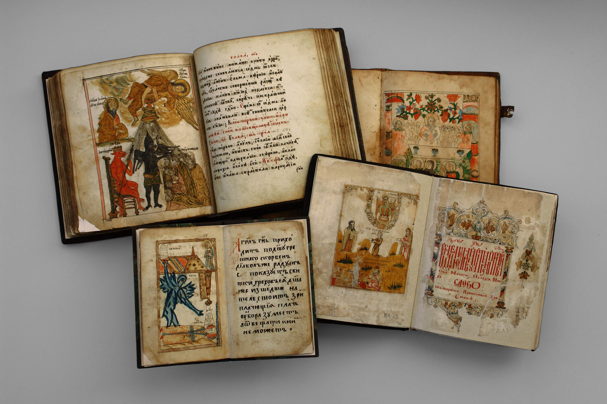
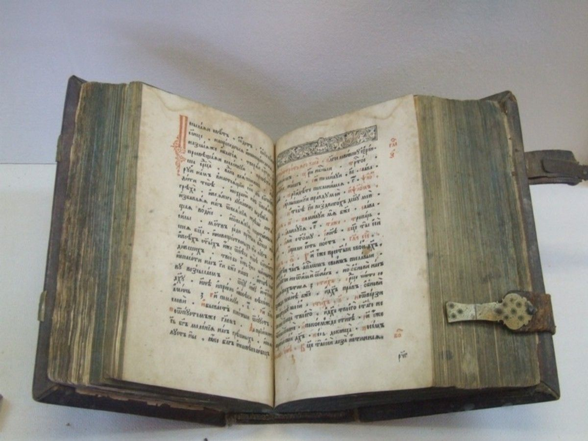

Жанры книг /
Драма /
Детективы /
Фантастика /
Комедия /
Отзыв
 КНИГА
КНИГА
ДЛЯ ТВОЕЙ ДУШИ!
"Среди книг, как и среди людей, можно попасть в хорошее и в дурное общество"(К.Гельверций)
История первой книги
Самая древняя книга привычного нам формата - Синайский кодекс датируется IV веком
н. э.Первые 43 страницы кодекса были найдены немецким ученым Константином Тишендорфом в 1844 году
в библиотеке монастыря Святой Елены на Синайском полуострове. Ученый нашел их в куче макулатуры,
приготовленной для уничтожения. Еще 86 страниц он нашел в результате целенаправленных поисков.
Тишендорф увез их в Европу и обнародовал.
